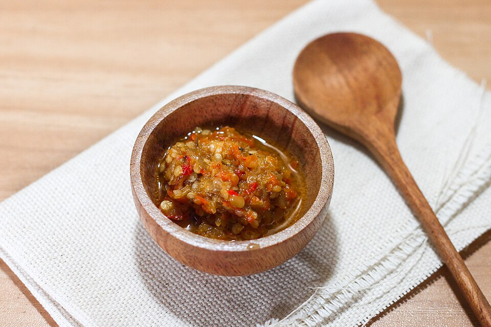

Home
Sambal Bawang

Sambal Bawang, which literally means "onion chili sauce" in English, is one of Indonesia's most beloved condiments. True to its name, this sambal highlights the generous use of bawang, especially shallots and garlic, combined with spicy bird’s eye chili and fragrant hot oil. It’s simple, bold, and deeply comforting, the kind of sambal you’ll find everywhere from humble street food stalls to family dining tables. Curious how to make this flavorful kitchen staple at home? Here's the recipe:
Ingredients
- 6 cloves garlic (with skin on)
- 150-200 ml cooking oil
- 150 grams shallots, pounded or roughly chopped
- 150 grams bird's eye chili (adjust to your spice preference)
- 8 grams shrimp paste (optional)
- 50 ml water
- 1 tsp salt
- 1 tsp sugar (optional)
- ¾ tsp MSG
Steps
- Heat the oil in a pan over medium heat.
- Add the garlic cloves (skin-on) and fry until golden brown and fragrant.
- Remove the garlic and set aside. Don't throw away that flavored oil. It's liquid gold!
- In a food processor, combine the shallots and bird's eye chili.
- Pulse until coarsely chopped. We want a coarse, slightly chunky texture, not a smooth paste.
- In the same oil (the one you used for garlic), add the blended shallots and chili.
- Crumble in the shrimp paste (if using) and stir well.
- Cook on low heat, stirring occasionally so it doesn't burn.
- Add salt, sugar, and MSG. Stir to combine.
- Pour in a little water, then continue cooking on low heat until the water evaporates completely.
- You'll know it's ready when the oil separates slightly and the sambal looks glossy.
- Let the sambal cool completely.
- Transfer to an airtight jar or container. It stays good in the fridge for weeks!
How to serve
- Scoop some sambal bawang onto a plate of warm rice, fried chicken, or even instant noodles. (It's a versatile sambal!)
- Pair with warm rice crackers for that perfect crunchy-spicy combo!